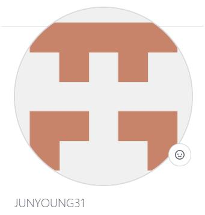
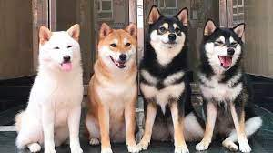
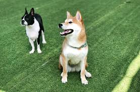

Youtube
#DreamCoding
#DreamCoder
#Juns
YouTube 모바일 웹사이트 따라 만들기| 프론트엔드 개발자 입문편: HTML, CSS, JavaScript를 사용해서 youtube 화면을 copy 해서 css 를 적용하는 연습 3줄로 만들어서 일단 실험을 해본다
1M views 1 month ago
1K
0
Share
Save
Report

드림코딩 by 준영
1K subscribers
subscribe
Up next
1번째 동영상
드림코딩 by 준영
12K views

2번째 동영상
드림코딩 by 준영
34K views

3번째 동영상
드림코딩 by 준영
56K views